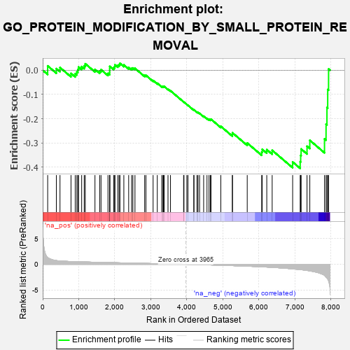
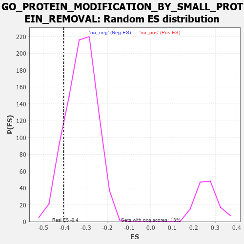

| | | Dataset | 7d |
| Phenotype | NoPhenotypeAvailable |
| Upregulated in class | na_neg |
| GeneSet | GO_PROTEIN_MODIFICATION_BY_SMALL_PROTEIN_REMOVAL |
| Enrichment Score (ES) | -0.4044571 |
| Normalized Enrichment Score (NES) | -1.2545352 |
| Nominal p-value | 0.12471132 |
| FDR q-value | 0.53668 |
| FWER p-Value | 1.0 |
Table: GSEA Results Summary

Fig 1: Enrichment plot: GO_PROTEIN_MODIFICATION_BY_SMALL_PROTEIN_REMOVAL
Profile of the Running ES Score & Positions of GeneSet Members on the Rank Ordered List
| PROBE | GENE SYMBOL | GENE_TITLE | RANK IN GENE LIST | RANK METRIC SCORE | RUNNING ES | CORE ENRICHMENT | | 1 | DESI1 | | | 138 | 1.332 | 0.0180 | No |
| 2 | CLSPN | | | 379 | 0.719 | 0.0067 | No |
| 3 | CDC20 | | | 480 | 0.644 | 0.0112 | No |
| 4 | UCHL3 | | | 785 | 0.536 | -0.0131 | No |
| 5 | HCFC1 | | | 902 | 0.506 | -0.0143 | No |
| 6 | ADRM1 | | | 948 | 0.496 | -0.0068 | No |
| 7 | WDR48 | | | 975 | 0.489 | 0.0029 | No |
| 8 | EIF3F | | | 995 | 0.485 | 0.0134 | No |
| 9 | FOXK2 | | | 1081 | 0.467 | 0.0151 | No |
| 10 | PSMD7 | | | 1152 | 0.454 | 0.0183 | No |
| 11 | PSMD2 | | | 1181 | 0.450 | 0.0267 | No |
| 12 | OTUD3 | | | 1450 | 0.400 | 0.0034 | No |
| 13 | TADA3 | | | 1580 | 0.378 | -0.0029 | No |
| 14 | KDM1B | | | 1618 | 0.371 | 0.0023 | No |
| 15 | PSMD4 | | | 1811 | 0.335 | -0.0131 | No |
| 16 | OTUB1 | | | 1857 | 0.326 | -0.0101 | No |
| 17 | PSMD6 | | | 1858 | 0.326 | -0.0015 | No |
| 18 | FOXK1 | | | 1859 | 0.326 | 0.0072 | No |
| 19 | SMAD4 | | | 1860 | 0.326 | 0.0159 | No |
| 20 | NFRKB | | | 1968 | 0.310 | 0.0106 | No |
| 21 | MCRS1 | | | 1996 | 0.305 | 0.0153 | No |
| 22 | FOXO4 | | | 2004 | 0.304 | 0.0225 | No |
| 23 | SART3 | | | 2084 | 0.293 | 0.0203 | No |
| 24 | INO80 | | | 2120 | 0.288 | 0.0235 | No |
| 25 | PSME4 | | | 2143 | 0.285 | 0.0283 | No |
| 26 | PSMF1 | | | 2251 | 0.268 | 0.0219 | No |
| 27 | OTUD5 | | | 2385 | 0.247 | 0.0116 | No |
| 28 | UBXN1 | | | 2467 | 0.232 | 0.0075 | No |
| 29 | KAT2B | | | 2502 | 0.226 | 0.0092 | No |
| 30 | PSMD5 | | | 2560 | 0.218 | 0.0078 | No |
| 31 | BECN1 | | | 2828 | 0.179 | -0.0212 | No |
| 32 | UCHL5 | | | 2864 | 0.172 | -0.0211 | No |
| 33 | KEAP1 | | | 3063 | 0.141 | -0.0424 | No |
| 34 | PSMD9 | | | 3179 | 0.125 | -0.0536 | No |
| 35 | SMAD3 | | | 3303 | 0.105 | -0.0664 | No |
| 36 | SMAD1 | | | 3337 | 0.099 | -0.0679 | No |
| 37 | TAB1 | | | 3351 | 0.097 | -0.0670 | No |
| 38 | SMAD7 | | | 3369 | 0.093 | -0.0667 | No |
| 39 | HGS | | | 3476 | 0.080 | -0.0779 | No |
| 40 | WDR20 | | | 3545 | 0.068 | -0.0847 | No |
| 41 | DESI2 | | | 3909 | 0.009 | -0.1305 | No |
| 42 | IFIH1 | | | 3919 | 0.006 | -0.1314 | No |
| 43 | DDX58 | | | 3998 | -0.007 | -0.1411 | No |
| 44 | TOR1A | | | 4030 | -0.013 | -0.1447 | No |
| 45 | STAM2 | | | 4193 | -0.041 | -0.1641 | No |
| 46 | ENY2 | | | 4195 | -0.041 | -0.1632 | No |
| 47 | PSME3 | | | 4280 | -0.056 | -0.1723 | No |
| 48 | SENP8 | | | 4309 | -0.061 | -0.1742 | No |
| 49 | ADRB2 | | | 4352 | -0.068 | -0.1777 | No |
| 50 | NEDD8 | | | 4465 | -0.087 | -0.1896 | No |
| 51 | APC | | | 4558 | -0.107 | -0.1984 | No |
| 52 | GATA3 | | | 4614 | -0.120 | -0.2022 | No |
| 53 | TAF10 | | | 4652 | -0.128 | -0.2034 | No |
| 54 | SENP7 | | | 4669 | -0.132 | -0.2020 | No |
| 55 | EP300 | | | 4941 | -0.186 | -0.2313 | No |
| 56 | PTEN | | | 5262 | -0.261 | -0.2649 | No |
| 57 | CDK1 | | | 5264 | -0.262 | -0.2580 | No |
| 58 | PSMD1 | | | 5674 | -0.367 | -0.3000 | No |
| 59 | USP9Y | | | 6075 | -0.498 | -0.3374 | No |
| 60 | UBB | | | 6090 | -0.503 | -0.3258 | No |
| 61 | SMAD2 | | | 6216 | -0.541 | -0.3273 | No |
| 62 | BIRC3 | | | 6366 | -0.603 | -0.3301 | No |
| 63 | SNX3 | | | 6934 | -0.893 | -0.3781 | Yes |
| 64 | CFTR | | | 7143 | -1.030 | -0.3771 | Yes |
| 65 | UFD1 | | | 7157 | -1.040 | -0.3510 | Yes |
| 66 | AR | | | 7169 | -1.046 | -0.3246 | Yes |
| 67 | CYLD | | | 7333 | -1.206 | -0.3132 | Yes |
| 68 | UBC | | | 7410 | -1.274 | -0.2889 | Yes |
| 69 | TRAF6 | | | 7818 | -2.157 | -0.2831 | Yes |
| 70 | TRAF2 | | | 7861 | -2.481 | -0.2224 | Yes |
| 71 | TRAF3 | | | 7886 | -2.695 | -0.1537 | Yes |
| 72 | PSMD3 | | | 7907 | -2.887 | -0.0794 | Yes |
| 73 | PSMD8 | | | 7931 | -3.286 | 0.0051 | Yes |
Table: GSEA details [plain text format]

Fig 2: GO_PROTEIN_MODIFICATION_BY_SMALL_PROTEIN_REMOVAL: Random ES distribution
Gene set null distribution of ES for GO_PROTEIN_MODIFICATION_BY_SMALL_PROTEIN_REMOVAL